2022 Advanced Higher Biology - Paper 2 questions
Source: Scottish Qualifications Authority (SQA) / Qualifications Scotland. This is a StemInteract HTML companion, not an official HTML edition. Selectable text is supplied alongside original page images. Use the images or original PDF for equations, powers, fractions, vector notation, tables and diagrams; text extraction cannot fully preserve mathematical layout.
Jump to a question
PDF page 1
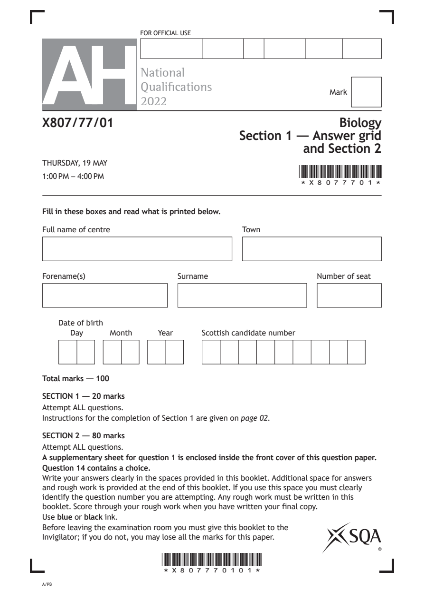
Selectable page text
FOR OFFICIAL USE
AH
National
Qualications
Mark
2022
X807/77/01 Biology
Section 1 — Answer grid
and Section 2
THURSDAY, 19 MAY
1:00 PM – 4:00 PM
*X8077701*
Fill in these boxes and read what is printed below.
Full name of centre Town
Forename(s) Surname Number of seat
Date of birth
Day Month Year Scottish candidate number
Total marks — 100
SECTION 1 — 20 marks
Attempt ALL questions.
Instructions for the completion of Section 1 are given on page 02.
SECTION 2 — 80 marks
Attempt ALL questions.
A supplementary sheet for question 1 is enclosed inside the front cover of this question paper.
Question 14 contains a choice.
Write your answers clearly in the spaces provided in this booklet. Additional space for answers
and rough work is provided at the end of this booklet. If you use this space you must clearly
identify the question number you are attempting. Any rough work must be written in this
booklet. Score through your rough work when you have written your final copy.
Use blue or black ink.
Before leaving the examination room you must give this booklet to the
Invigilator; if you do not, you may lose all the marks for this paper.
©
*X807770101*
A/PBPDF page 2
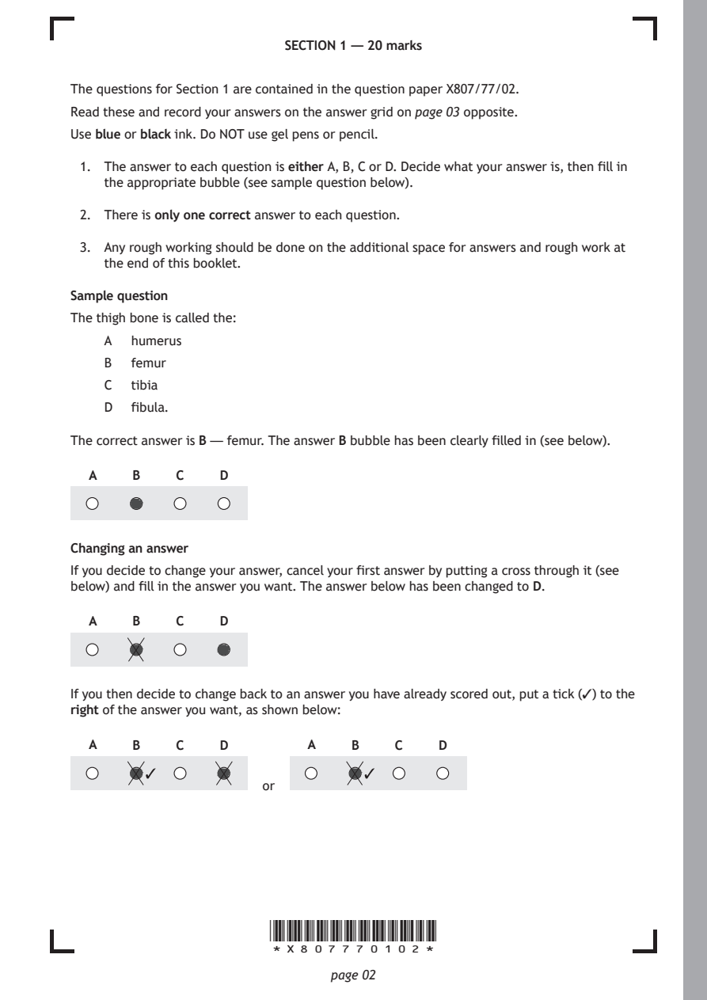
Selectable page text
SECTION 1 — 20 marks
The questions for Section 1 are contained in the question paper X807/77/02.
Read these and record your answers on the answer grid on page 03 opposite.
Use blue or black ink. Do NOT use gel pens or pencil.
1. The answer to each question is either A, B, C or D. Decide what your answer is, then fill in
the appropriate bubble (see sample question below).
2. There is only one correct answer to each question.
3. Any rough working should be done on the additional space for answers and rough work at
the end of this booklet.
Sample question
The thigh bone is called the:
A humerus
B femur
C tibia
D fibula.
The correct answer is B — femur. The answer B bubble has been clearly filled in (see below).
A B C D
Changing an answer
If you decide to change your answer, cancel your first answer by putting a cross through it (see
below) and fill in the answer you want. The answer below has been changed to D.
A B C D
If you then decide to change back to an answer you have already scored out, put a tick (3) to the
right of the answer you want, as shown below:
A B C D A B C D
or
*X807770102*
page 02PDF page 3

Selectable page text
SECTION 1 — Answer grid
*OBJ20AD1*
A B C D
1
2
3
4
5
6
7
8
9
10
11
12
13
14
15
16
17
18
19
20
*X807770103*
page 03 [Turn overPDF page 4

Selectable page text
[BLANK PAGE]
DO NOT WRITE ON THIS PAGE
*X807770104*
page 04PDF page 5
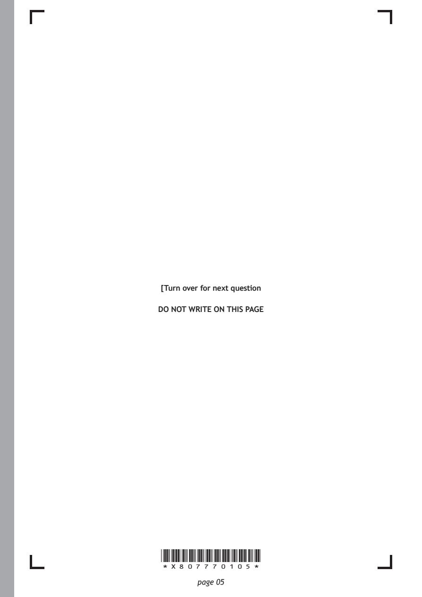
Selectable page text
[Turn over for next question
DO NOT WRITE ON THIS PAGE
*X807770105*
page 05PDF page 6
Paper 2, Question 1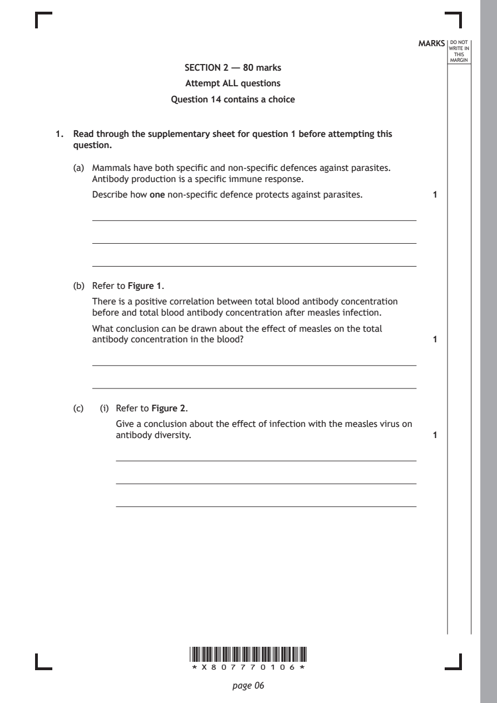
Selectable page text
MARKS _{W}^{D}_{R}^{O}_{I} _{T}^{N}OT
E IN
THIS
MARGIN
SECTION 2 — 80 marks
Attempt ALL questions
Question 14 contains a choice
1. Read through the supplementary sheet for question 1 before attempting this
question.
(a) Mammals have both specific and non‑specific defences against parasites.
Antibody production is a specific immune response.
Describe how one non‑specific defence protects against parasites. 1
(b) Refer to Figure 1.
There is a positive correlation between total blood antibody concentration
before and total blood antibody concentration after measles infection.
What conclusion can be drawn about the effect of measles on the total
antibody concentration in the blood? 1
(c) (i) Refer to Figure 2.
Give a conclusion about the effect of infection with the measles virus on
antibody diversity. 1
*X807770106*
page 06PDF page 7
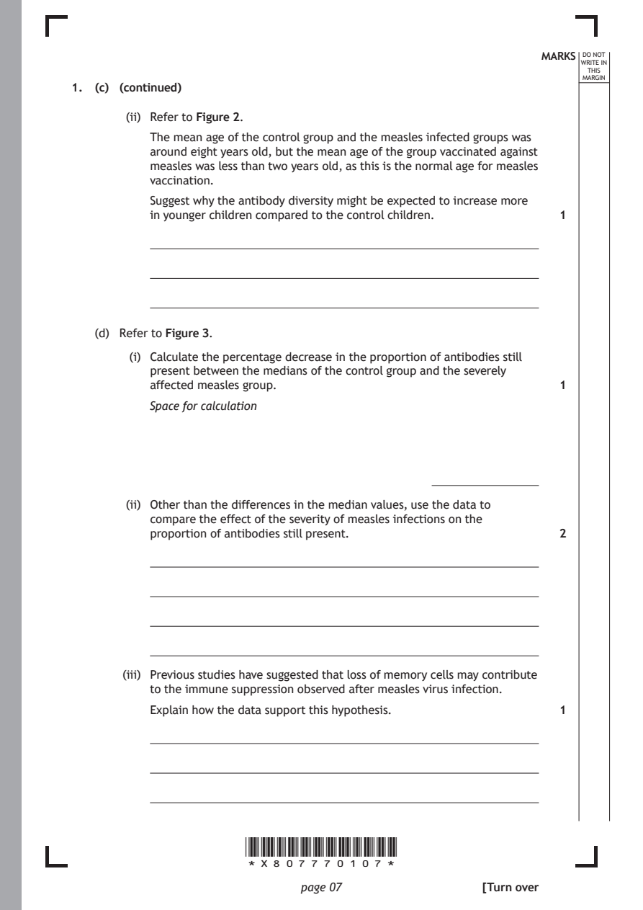
Selectable page text
MARKS _{W}^{D}_{R}^{O}_{I} _{T}^{N}OT
E IN
THIS
MARGIN
1. (c) (continued)
(ii) Refer to Figure 2.
The mean age of the control group and the measles infected groups was
around eight years old, but the mean age of the group vaccinated against
measles was less than two years old, as this is the normal age for measles
vaccination.
Suggest why the antibody diversity might be expected to increase more
in younger children compared to the control children. 1
(d) Refer to Figure 3.
(i) Calculate the percentage decrease in the proportion of antibodies still
present between the medians of the control group and the severely
affected measles group. 1
Space for calculation
(ii) Other than the differences in the median values, use the data to
compare the effect of the severity of measles infections on the
proportion of antibodies still present. 2
(iii) Previous studies have suggested that loss of memory cells may contribute
to the immune suppression observed after measles virus infection.
Explain how the data support this hypothesis. 1
*X807770107*
page 07 [Turn overPDF page 8
Paper 2, Question 2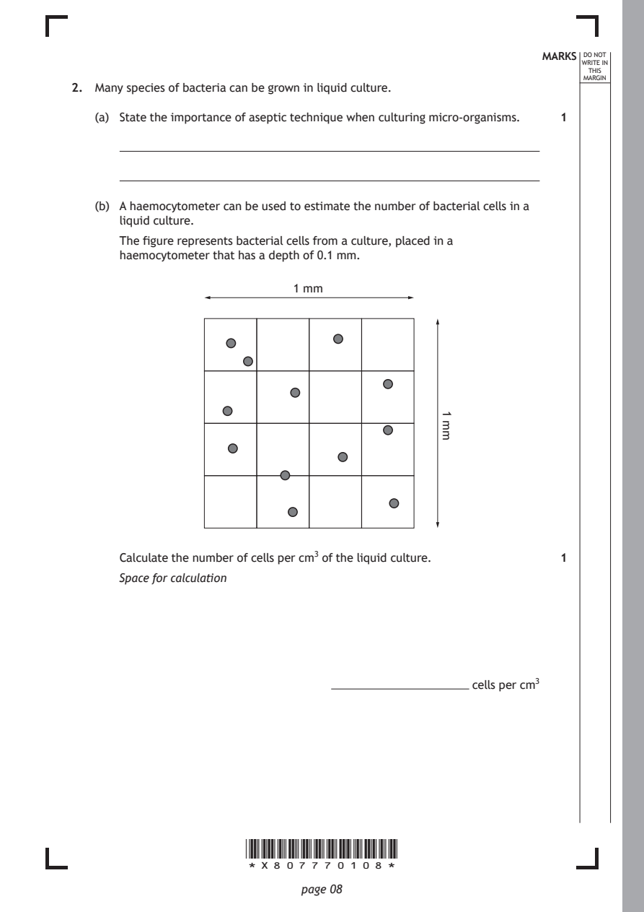
Selectable page text
MARKS _{W}^{D}_{R}^{O}_{I} _{T}^{N}OT
E IN
THIS
MARGIN
2. Many species of bacteria can be grown in liquid culture.
(a) State the importance of aseptic technique when culturing micro‑organisms.
(b) A haemocytometer can be used to estimate the number of bacterial cells in a
liquid culture.
The figure represents bacterial cells from a culture, placed in a
haemocytometer that has a depth of 0.1 mm.
1 mm
*X807770108*
page 08
1
mm
1
Calculate the number of cells per cm³ of the liquid culture. 1
Space for calculation
cells per cm³PDF page 9
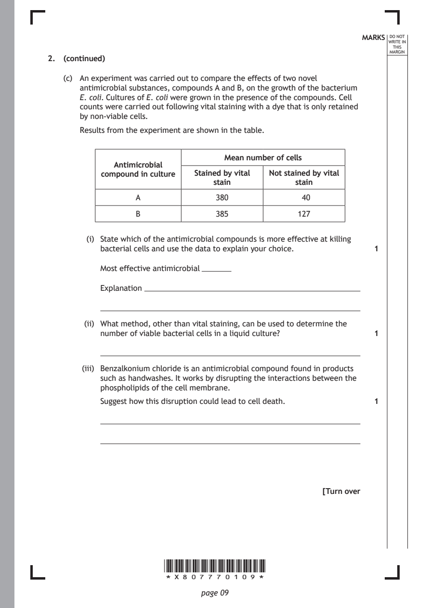
Selectable page text
MARKS _{W}^{D}_{R}^{O}_{I} _{T}^{N}OT
E IN
THIS
MARGIN
2. (continued)
(c) An experiment was carried out to compare the effects of two novel
antimicrobial substances, compounds A and B, on the growth of the bacterium
E. coli. Cultures of E. coli were grown in the presence of the compounds. Cell
counts were carried out following vital staining with a dye that is only retained
by non‑viable cells.
Results from the experiment are shown in the table.
Mean number of cells
Antimicrobial
compound in culture Stained by vital Not stained by vital
stain stain
A 380 40
B 385 127
(i) State which of the antimicrobial compounds is more effective at killing
bacterial cells and use the data to explain your choice. 1
Most effective antimicrobial
Explanation
(ii) What method, other than vital staining, can be used to determine the
number of viable bacterial cells in a liquid culture? 1
(iii) Benzalkonium chloride is an antimicrobial compound found in products
such as handwashes. It works by disrupting the interactions between the
phospholipids of the cell membrane.
Suggest how this disruption could lead to cell death. 1
[Turn over
*X807770109*
page 09PDF page 10
Paper 2, Question 3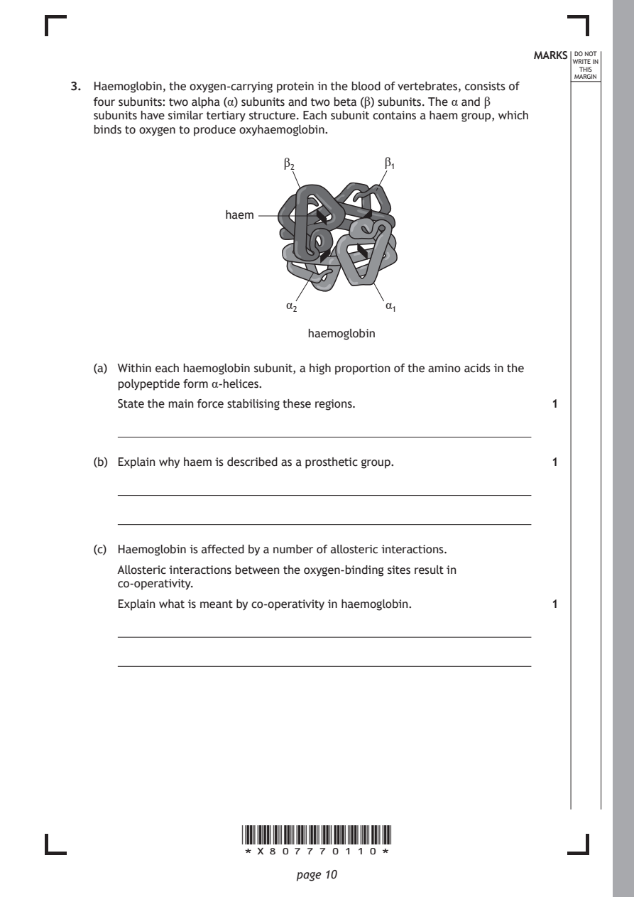
Selectable page text
MARKS _{W}^{D}_{R}^{O}_{I} _{T}^{N}OT
E IN
THIS
MARGIN
3. Haemoglobin, the oxygen‑carrying protein in the blood of vertebrates, consists of
four subunits: two alpha (α) subunits and two beta (β) subunits. The α and β
subunits have similar tertiary structure. Each subunit contains a haem group, which
binds to oxygen to produce oxyhaemoglobin.
β₂ β₁
haem
α₂ α₁
haemoglobin
(a) Within each haemoglobin subunit, a high proportion of the amino acids in the
polypeptide form α‑helices.
State the main force stabilising these regions. 1
(b) Explain why haem is described as a prosthetic group. 1
(c) Haemoglobin is affected by a number of allosteric interactions.
Allosteric interactions between the oxygen‑binding sites result in
co‑operativity.
Explain what is meant by co‑operativity in haemoglobin. 1
*X807770110*
page 10PDF page 11
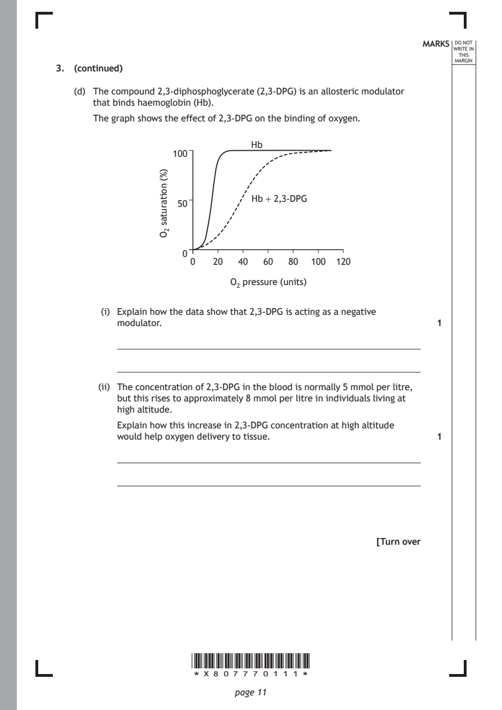
Selectable page text
MARKS _{W}^{D}_{R}^{O}_{I} _{T}^{N}OT
E IN
THIS
MARGIN
3. (continued)
(d) The compound 2,3‑diphosphoglycerate (2,3‑DPG) is an allosteric modulator
that binds haemoglobin (Hb).
The graph shows the effect of 2,3‑DPG on the binding of oxygen.
*X807770111*
page 11
)%(
noitarutas
O
2
Hb
100
Hb + 2,3‑DPG
50
0
0 20 40 60 80 100 120
O₂ pressure (units)
(i) Explain how the data show that 2,3‑DPG is acting as a negative
modulator. 1
(ii) The concentration of 2,3‑DPG in the blood is normally 5 mmol per litre,
but this rises to approximately 8 mmol per litre in individuals living at
high altitude.
Explain how this increase in 2,3‑DPG concentration at high altitude
would help oxygen delivery to tissue. 1
[Turn overPDF page 12
Paper 2, Question 4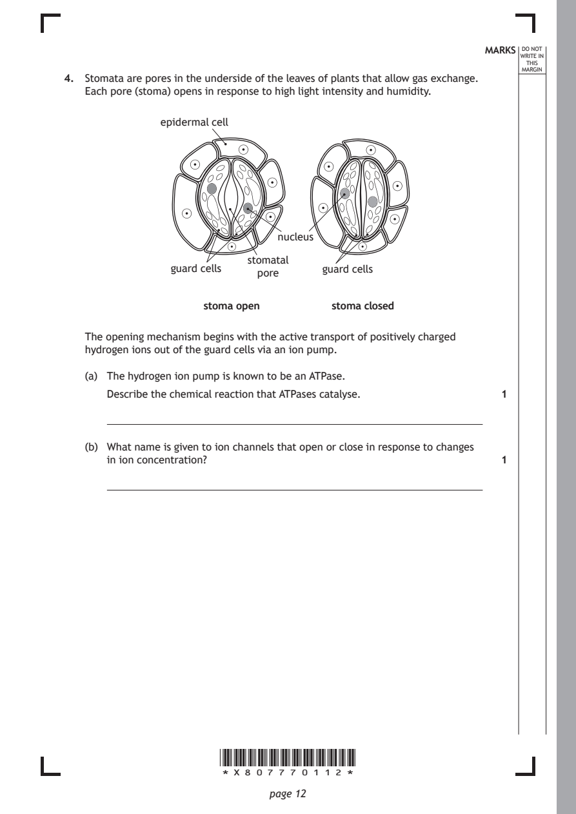
Selectable page text
MARKS _{W}^{D}_{R}^{O}_{I} _{T}^{N}OT
E IN
THIS
MARGIN
4. Stomata are pores in the underside of the leaves of plants that allow gas exchange.
Each pore (stoma) opens in response to high light intensity and humidity.
epidermal cell
nucleus
stomatal
guard cells guard cells
pore
stoma open stoma closed
The opening mechanism begins with the active transport of positively charged
hydrogen ions out of the guard cells via an ion pump.
(a) The hydrogen ion pump is known to be an ATPase.
Describe the chemical reaction that ATPases catalyse. 1
(b) What name is given to ion channels that open or close in response to changes
in ion concentration? 1
*X807770112*
page 12PDF page 13
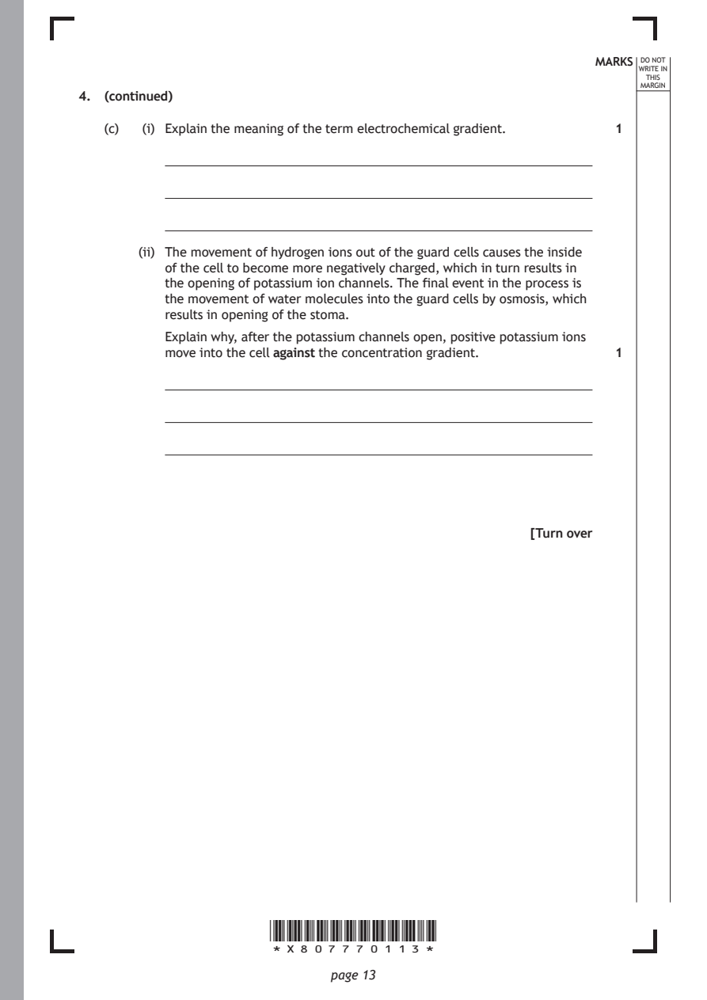
Selectable page text
MARKS _{W}^{D}_{R}^{O}_{I} _{T}^{N}OT
E IN
THIS
MARGIN
4. (continued)
(c) (i) Explain the meaning of the term electrochemical gradient. 1
(ii) The movement of hydrogen ions out of the guard cells causes the inside
of the cell to become more negatively charged, which in turn results in
the opening of potassium ion channels. The final event in the process is
the movement of water molecules into the guard cells by osmosis, which
results in opening of the stoma.
Explain why, after the potassium channels open, positive potassium ions
move into the cell against the concentration gradient. 1
[Turn over
*X807770113*
page 13PDF page 14
Paper 2, Question 5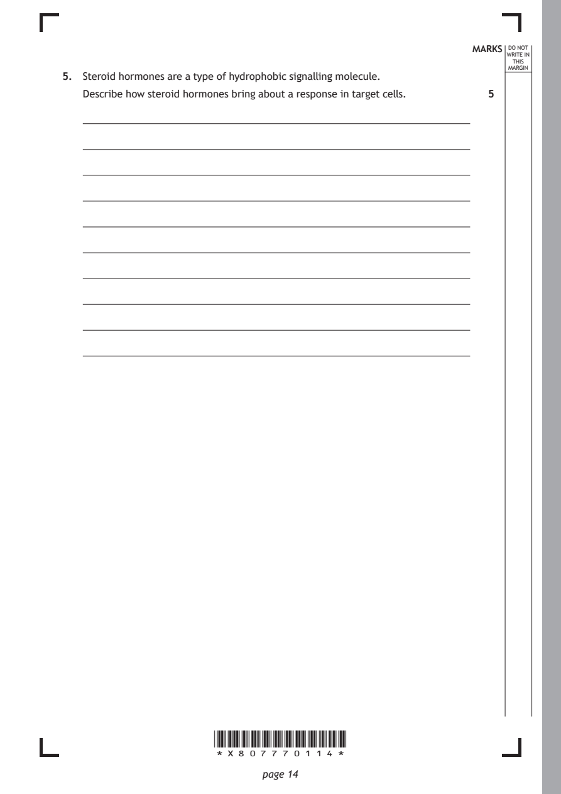
Selectable page text
MARKS _{W}^{D}_{R}^{O}_{I} _{T}^{N}OT
E IN
THIS
MARGIN
5. Steroid hormones are a type of hydrophobic signalling molecule.
Describe how steroid hormones bring about a response in target cells. 5
*X807770114*
page 14PDF page 15
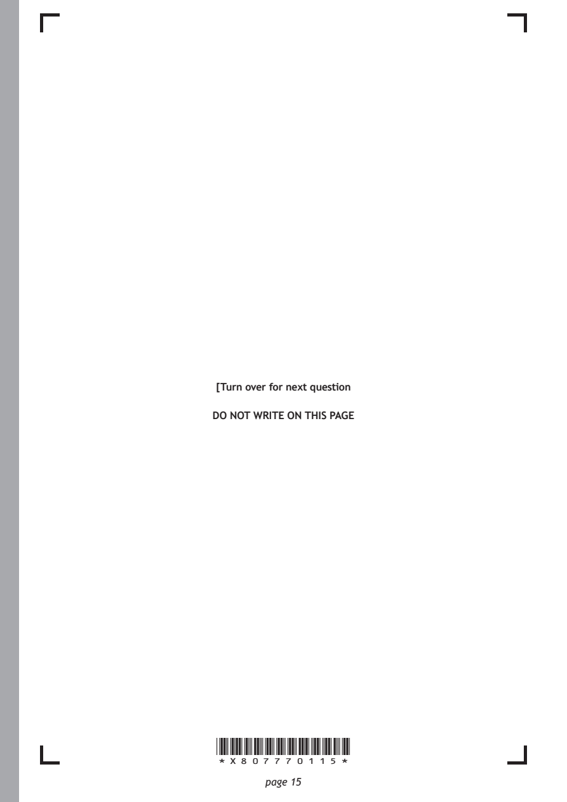
Selectable page text
[Turn over for next question
DO NOT WRITE ON THIS PAGE
*X807770115*
page 15PDF page 16
Paper 2, Question 6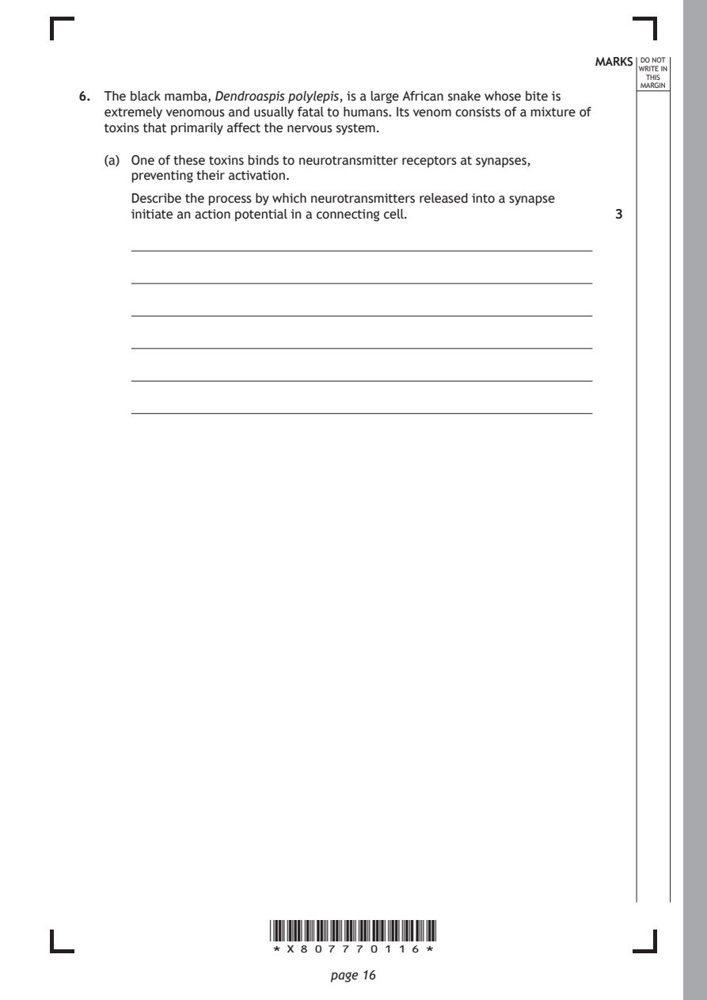
Selectable page text
MARKS _{W}^{D}_{R}^{O}_{I} _{T}^{N}OT
E IN
THIS
MARGIN
6. The black mamba, Dendroaspis polylepis, is a large African snake whose bite is
extremely venomous and usually fatal to humans. Its venom consists of a mixture of
toxins that primarily affect the nervous system.
(a) One of these toxins binds to neurotransmitter receptors at synapses,
preventing their activation.
Describe the process by which neurotransmitters released into a synapse
initiate an action potential in a connecting cell. 3
*X807770116*
page 16PDF page 17
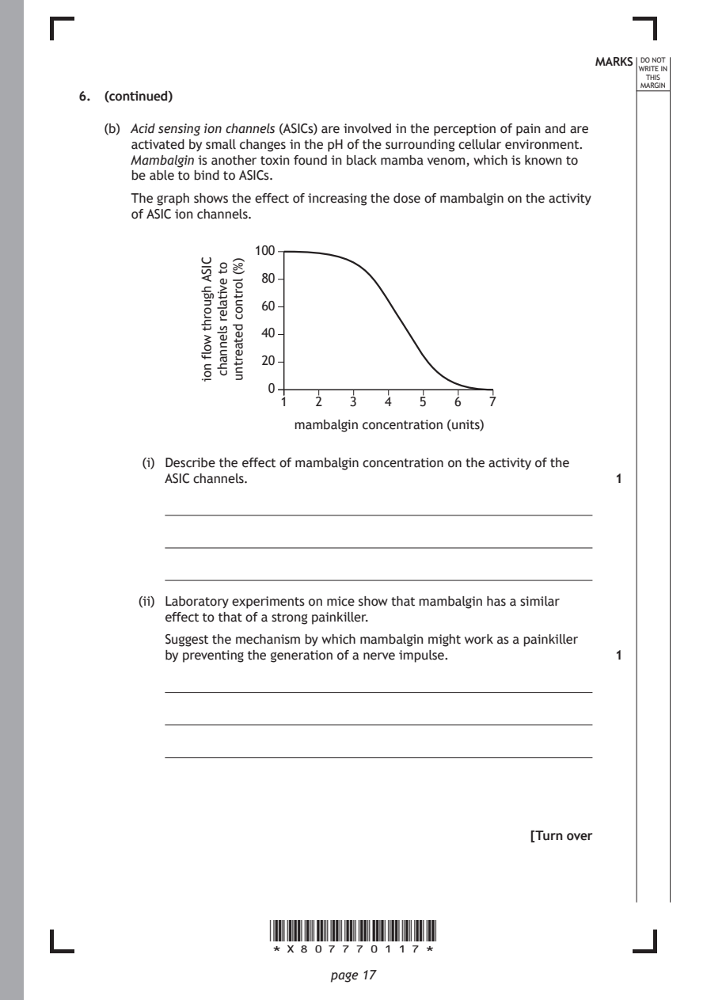
Selectable page text
MARKS _{W}^{D}_{R}^{O}_{I} _{T}^{N}OT
E IN
THIS
MARGIN
6. (continued)
(b) Acid sensing ion channels (ASICs) are involved in the perception of pain and are
activated by small changes in the pH of the surrounding cellular environment.
Mambalgin is another toxin found in black mamba venom, which is known to
be able to bind to ASICs.
The graph shows the effect of increasing the dose of mambalgin on the activity
of ASIC ion channels.
*X807770117*
page 17
CISA
hguorht
wolf
noi
ot
evitaler
slennahc
)%(
lortnoc
detaertnu
100
80
60
40
20
0
1 2 3 4 5 6 7
mambalgin concentration (units)
(i) Describe the effect of mambalgin concentration on the activity of the
ASIC channels. 1
(ii) Laboratory experiments on mice show that mambalgin has a similar
effect to that of a strong painkiller.
Suggest the mechanism by which mambalgin might work as a painkiller
by preventing the generation of a nerve impulse. 1
[Turn overPDF page 18
Paper 2, Question 7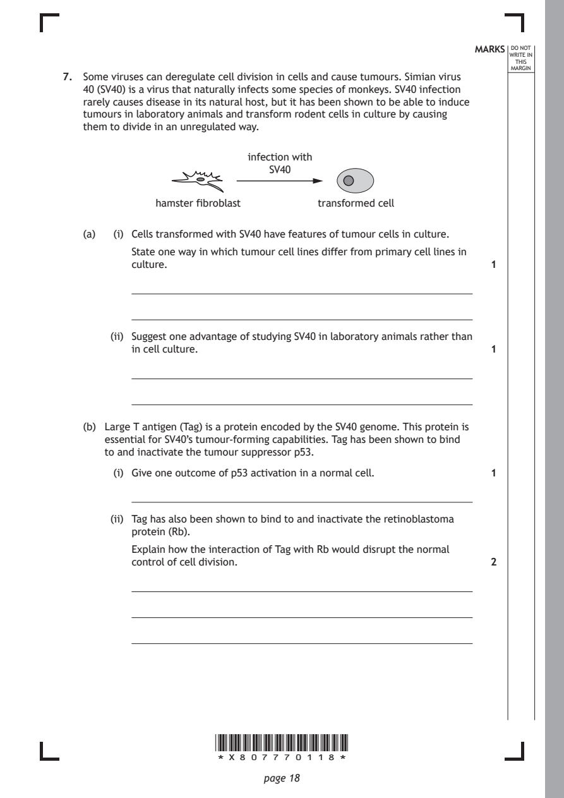
Selectable page text
MARKS _{W}^{D}_{R}^{O}_{I} _{T}^{N}OT
E IN
THIS
MARGIN
7. Some viruses can deregulate cell division in cells and cause tumours. Simian virus
40 (SV40) is a virus that naturally infects some species of monkeys. SV40 infection
rarely causes disease in its natural host, but it has been shown to be able to induce
tumours in laboratory animals and transform rodent cells in culture by causing
them to divide in an unregulated way.
infection with
SV40
hamster fibroblast transformed cell
(a) (i) Cells transformed with SV40 have features of tumour cells in culture.
State one way in which tumour cell lines differ from primary cell lines in
culture. 1
(ii) Suggest one advantage of studying SV40 in laboratory animals rather than
in cell culture. 1
(b) Large T antigen (Tag) is a protein encoded by the SV40 genome. This protein is
essential for SV40’s tumour‑forming capabilities. Tag has been shown to bind
to and inactivate the tumour suppressor p53.
(i) Give one outcome of p53 activation in a normal cell. 1
(ii) Tag has also been shown to bind to and inactivate the retinoblastoma
protein (Rb).
Explain how the interaction of Tag with Rb would disrupt the normal
control of cell division. 2
*X807770118*
page 18PDF page 19
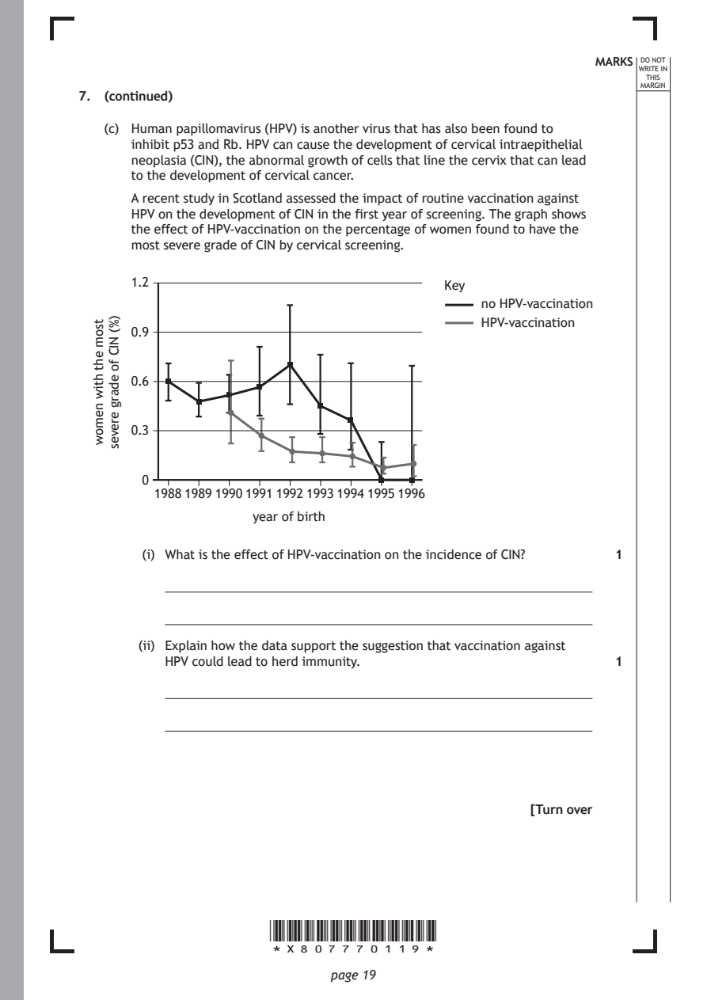
Selectable page text
MARKS _{W}^{D}_{R}^{O}_{I} _{T}^{N}OT
E IN
THIS
MARGIN
7. (continued)
(c) Human papillomavirus (HPV) is another virus that has also been found to
inhibit p53 and Rb. HPV can cause the development of cervical intraepithelial
neoplasia (CIN), the abnormal growth of cells that line the cervix that can lead
to the development of cervical cancer.
A recent study in Scotland assessed the impact of routine vaccination against
HPV on the development of CIN in the first year of screening. The graph shows
the effect of HPV‑vaccination on the percentage of women found to have the
most severe grade of CIN by cervical screening.
Key
no HPV‑vaccination
HPV‑vaccination
*X807770119*
page 19
tsom
eht
htiw
nemow
)%(
NIC
fo
edarg
ereves
1.2
0.9
0.6
0.3
0
198819891990199119921993199419951996
year of birth
(i) What is the effect of HPV‑vaccination on the incidence of CIN? 1
(ii) Explain how the data support the suggestion that vaccination against
HPV could lead to herd immunity. 1
[Turn overPDF page 20
Paper 2, Question 8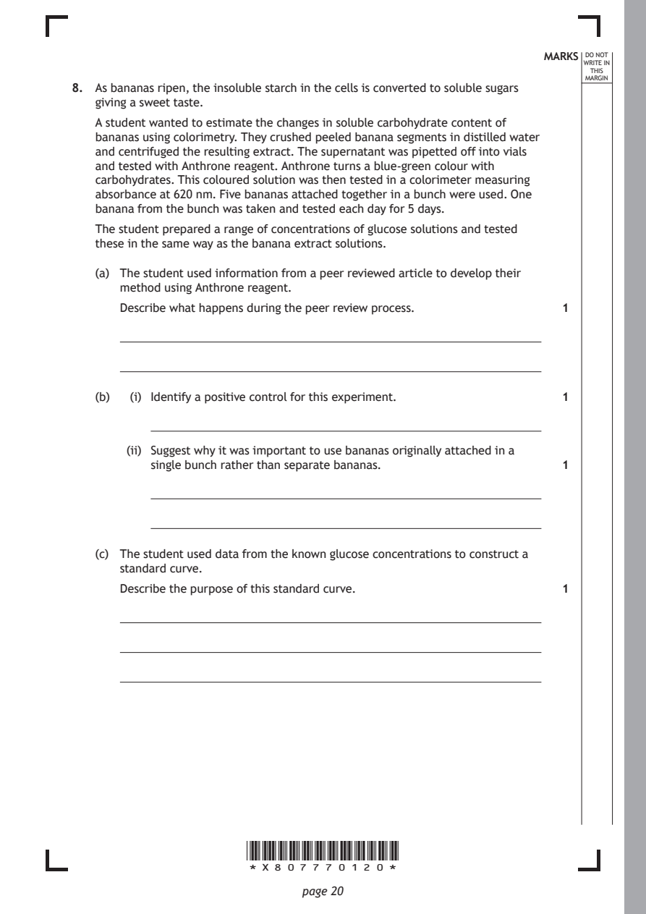
Selectable page text
MARKS _{W}^{D}_{R}^{O}_{I} _{T}^{N}OT
E IN
THIS
MARGIN
8. As bananas ripen, the insoluble starch in the cells is converted to soluble sugars
giving a sweet taste.
A student wanted to estimate the changes in soluble carbohydrate content of
bananas using colorimetry. They crushed peeled banana segments in distilled water
and centrifuged the resulting extract. The supernatant was pipetted off into vials
and tested with Anthrone reagent. Anthrone turns a blue‑green colour with
carbohydrates. This coloured solution was then tested in a colorimeter measuring
absorbance at 620 nm. Five bananas attached together in a bunch were used. One
banana from the bunch was taken and tested each day for 5 days.
The student prepared a range of concentrations of glucose solutions and tested
these in the same way as the banana extract solutions.
(a) The student used information from a peer reviewed article to develop their
method using Anthrone reagent.
Describe what happens during the peer review process. 1
(b) (i) Identify a positive control for this experiment. 1
(ii) Suggest why it was important to use bananas originally attached in a
single bunch rather than separate bananas. 1
(c) The student used data from the known glucose concentrations to construct a
standard curve.
Describe the purpose of this standard curve. 1
*X807770120*
page 20PDF page 21
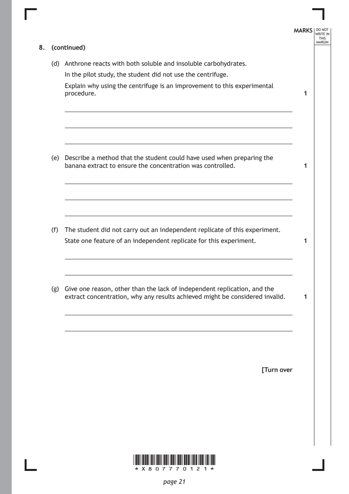
Selectable page text
MARKS _{W}^{D}_{R}^{O}_{I} _{T}^{N}OT
E IN
THIS
MARGIN
8. (continued)
(d) Anthrone reacts with both soluble and insoluble carbohydrates.
In the pilot study, the student did not use the centrifuge.
Explain why using the centrifuge is an improvement to this experimental
procedure. 1
(e) Describe a method that the student could have used when preparing the
banana extract to ensure the concentration was controlled. 1
(f) The student did not carry out an independent replicate of this experiment.
State one feature of an independent replicate for this experiment. 1
(g) Give one reason, other than the lack of independent replication, and the
extract concentration, why any results achieved might be considered invalid. 1
[Turn over
*X807770121*
page 21PDF page 22
Paper 2, Question 9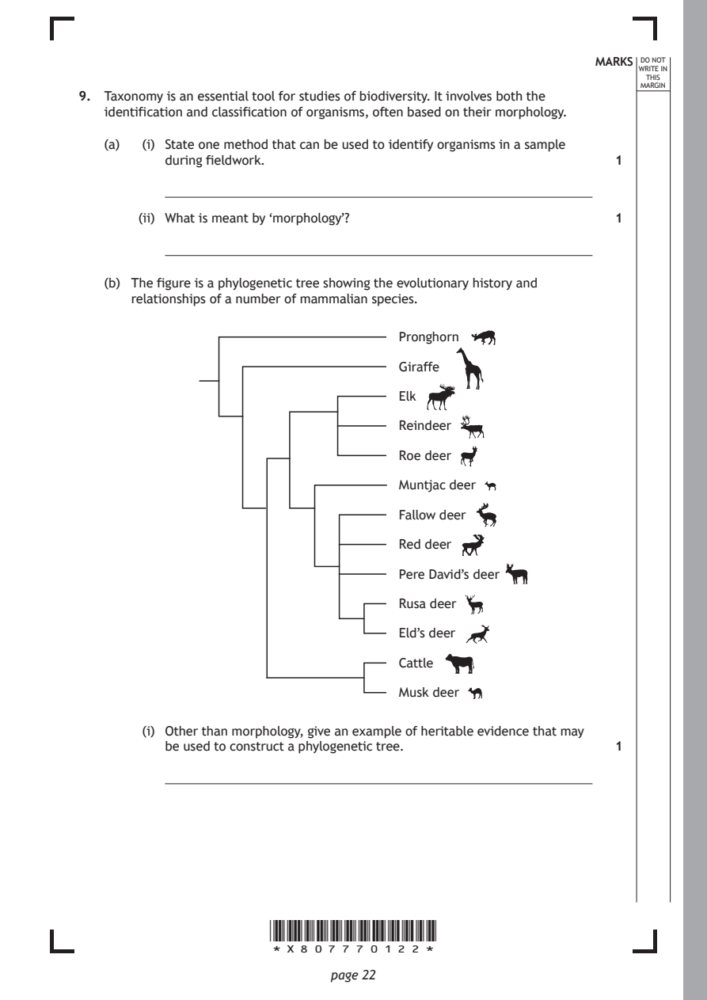
Selectable page text
MARKS _{W}^{D}_{R}^{O}_{I} _{T}^{N}OT
E IN
THIS
MARGIN
9. Taxonomy is an essential tool for studies of biodiversity. It involves both the
identification and classification of organisms, often based on their morphology.
(a) (i) State one method that can be used to identify organisms in a sample
during fieldwork. 1
(ii) What is meant by ‘morphology’? 1
(b) The figure is a phylogenetic tree showing the evolutionary history and
relationships of a number of mammalian species.
Pronghorn
Giraffe
Elk
Reindeer
Roe deer
Muntjac deer
Fallow deer
Red deer
Pere David’s deer
Rusa deer
Eld’s deer
Cattle
Musk deer
(i) Other than morphology, give an example of heritable evidence that may
be used to construct a phylogenetic tree. 1
*X807770122*
page 22PDF page 23
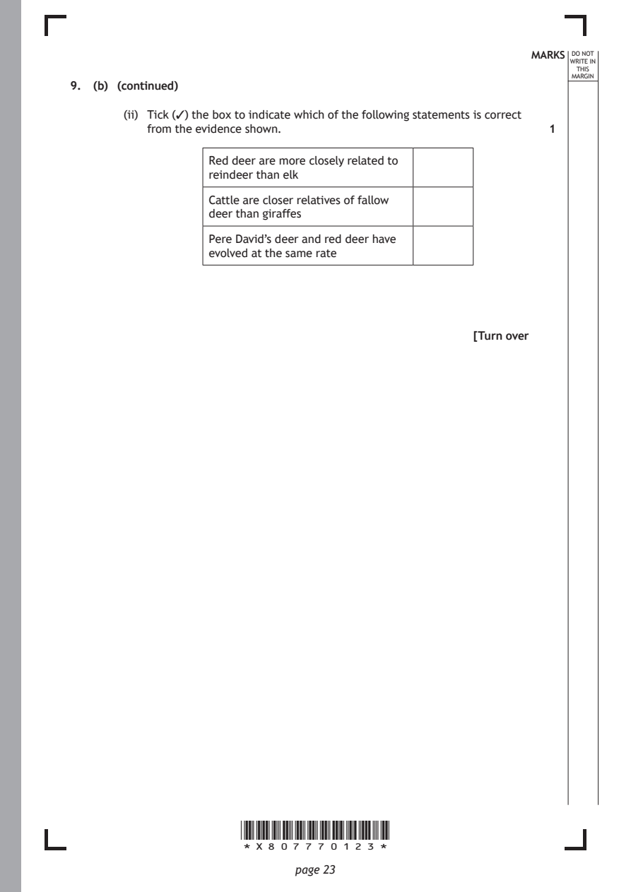
Selectable page text
MARKS _{W}^{D}_{R}^{O}_{I} _{T}^{N}OT
E IN
THIS
MARGIN
9. (b) (continued)
(ii) Tick (3) the box to indicate which of the following statements is correct
from the evidence shown. 1
Red deer are more closely related to
reindeer than elk
Cattle are closer relatives of fallow
deer than giraffes
Pere David’s deer and red deer have
evolved at the same rate
[Turn over
*X807770123*
page 23PDF page 24
Paper 2, Question 10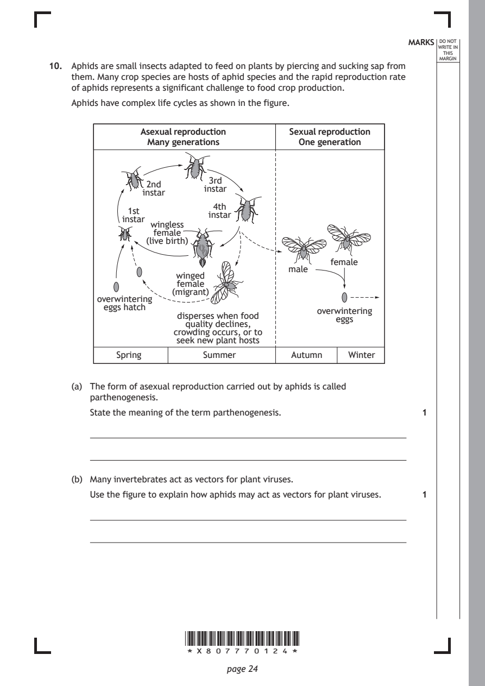
Selectable page text
MARKS _{W}^{D}_{R}^{O}_{I} _{T}^{N}OT
E IN
THIS
MARGIN
10. Aphids are small insects adapted to feed on plants by piercing and sucking sap from
them. Many crop species are hosts of aphid species and the rapid reproduction rate
of aphids represents a significant challenge to food crop production.
Aphids have complex life cycles as shown in the figure.
Asexual reproduction Sexual reproduction
Many generations One generation
3rd
2nd
instar
instar
4th
1st
instar
instar
wingless
female
(live birth)
female
male
winged
female
(migrant)
overwintering
eggs hatch
overwintering
disperses when food
eggs
quality declines,
crowding occurs, or to
seek new plant hosts
Spring Summer Autumn Winter
(a) The form of asexual reproduction carried out by aphids is called
parthenogenesis.
State the meaning of the term parthenogenesis. 1
(b) Many invertebrates act as vectors for plant viruses.
Use the figure to explain how aphids may act as vectors for plant viruses. 1
*X807770124*
page 24PDF page 25
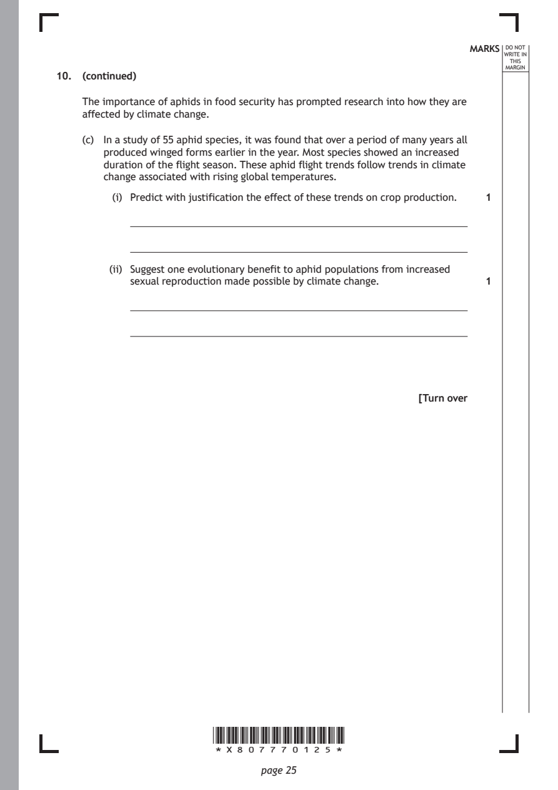
Selectable page text
MARKS _{W}^{D}_{R}^{O}_{I} _{T}^{N}OT
E IN
THIS
MARGIN
10. (continued)
The importance of aphids in food security has prompted research into how they are
affected by climate change.
(c) In a study of 55 aphid species, it was found that over a period of many years all
produced winged forms earlier in the year. Most species showed an increased
duration of the flight season. These aphid flight trends follow trends in climate
change associated with rising global temperatures.
(i) Predict with justification the effect of these trends on crop production. 1
(ii) Suggest one evolutionary benefit to aphid populations from increased
sexual reproduction made possible by climate change. 1
[Turn over
*X807770125*
page 25PDF page 26
Paper 2, Question 11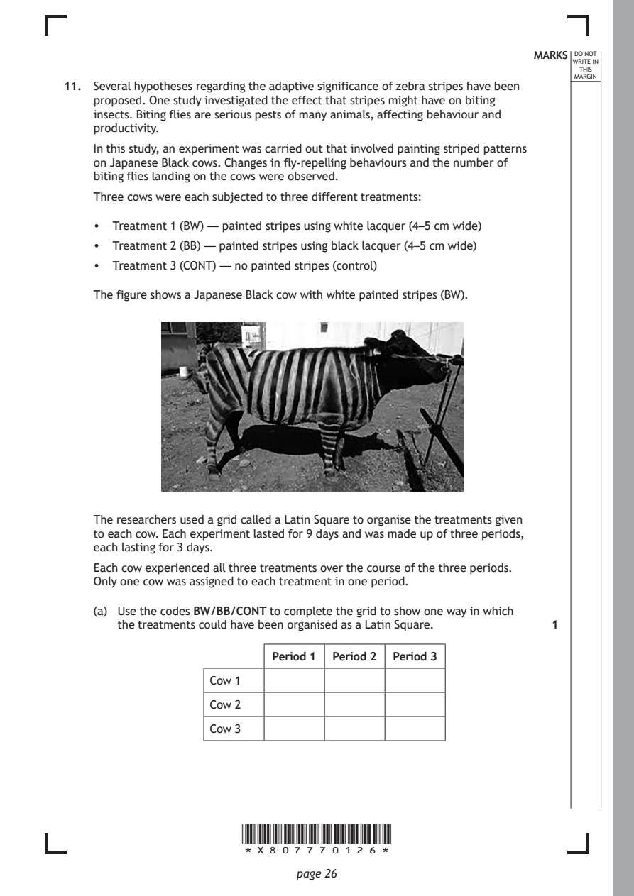
Selectable page text
MARKS _{W}^{D}_{R}^{O}_{I} _{T}^{N}OT
E IN
THIS
MARGIN
11. Several hypotheses regarding the adaptive significance of zebra stripes have been
proposed. One study investigated the effect that stripes might have on biting
insects. Biting flies are serious pests of many animals, affecting behaviour and
productivity.
In this study, an experiment was carried out that involved painting striped patterns
on Japanese Black cows. Changes in fly‑repelling behaviours and the number of
biting flies landing on the cows were observed.
Three cows were each subjected to three different treatments:
• Treatment 1 (BW) — painted stripes using white lacquer (4–5 cm wide)
• Treatment 2 (BB) — painted stripes using black lacquer (4–5 cm wide)
• Treatment 3 (CONT) — no painted stripes (control)
The figure shows a Japanese Black cow with white painted stripes (BW).
The researchers used a grid called a Latin Square to organise the treatments given
to each cow. Each experiment lasted for 9 days and was made up of three periods,
each lasting for 3 days.
Each cow experienced all three treatments over the course of the three periods.
Only one cow was assigned to each treatment in one period.
(a) Use the codes BW/BB/CONT to complete the grid to show one way in which
the treatments could have been organised as a Latin Square. 1
Period 1 Period 2 Period 3
Cow 1
Cow 2
Cow 3
*X807770126*
page 26PDF page 27
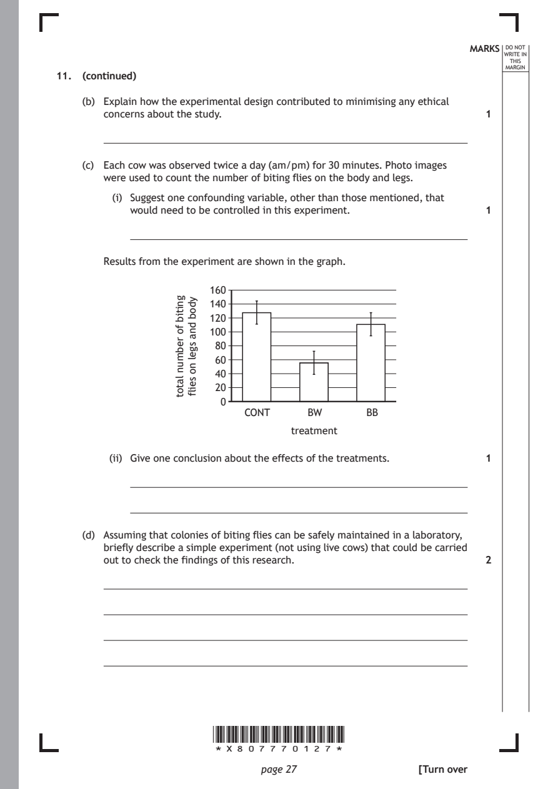
Selectable page text
MARKS _{W}^{D}_{R}^{O}_{I} _{T}^{N}OT
E IN
THIS
MARGIN
11. (continued)
(b) Explain how the experimental design contributed to minimising any ethical
concerns about the study.
(c) Each cow was observed twice a day (am/pm) for 30 minutes. Photo images
were used to count the number of biting flies on the body and legs.
(i) Suggest one confounding variable, other than those mentioned, that
would need to be controlled in this experiment.
Results from the experiment are shown in the graph.
*X807770127*
page 27
gnitib
fo
rebmun
latot
ydob
dna
sgel
no
seilf
1
1
160
140
120
100
80
60
40
20
0
CONT BW BB
treatment
(ii) Give one conclusion about the effects of the treatments. 1
(d) Assuming that colonies of biting flies can be safely maintained in a laboratory,
briefly describe a simple experiment (not using live cows) that could be carried
out to check the findings of this research. 2
[Turn overPDF page 28
Paper 2, Question 12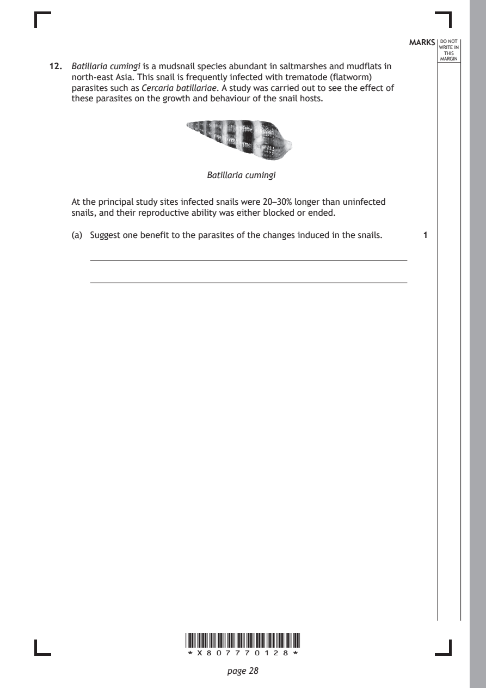
Selectable page text
MARKS _{W}^{D}_{R}^{O}_{I} _{T}^{N}OT
E IN
THIS
MARGIN
12. Batillaria cumingi is a mudsnail species abundant in saltmarshes and mudflats in
north‑east Asia. This snail is frequently infected with trematode (flatworm)
parasites such as Cercaria batillariae. A study was carried out to see the effect of
these parasites on the growth and behaviour of the snail hosts.
Batillaria cumingi
At the principal study sites infected snails were 20–30% longer than uninfected
snails, and their reproductive ability was either blocked or ended.
(a) Suggest one benefit to the parasites of the changes induced in the snails. 1
*X807770128*
page 28PDF page 29
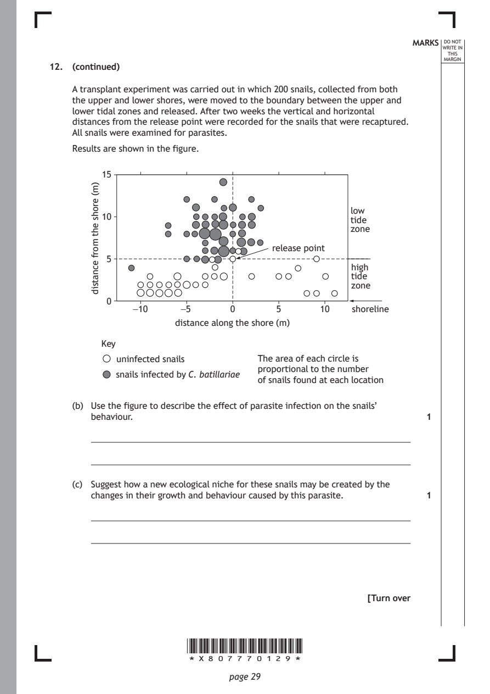
Selectable page text
MARKS _{W}^{D}_{R}^{O}_{I} _{T}^{N}OT
E IN
THIS
MARGIN
12. (continued)
A transplant experiment was carried out in which 200 snails, collected from both
the upper and lower shores, were moved to the boundary between the upper and
lower tidal zones and released. After two weeks the vertical and horizontal
distances from the release point were recorded for the snails that were recaptured.
All snails were examined for parasites.
Results are shown in the figure.
*X807770129*
page 29
)m(
erohs
eht
morf
ecnatsid
15
low
10
tide
zone
release point
5
high
tide
zone
0
−10 −5 0 5 10 shoreline
distance along the shore (m)
Key
uninfected snails The area of each circle is
proportional to the number
snails infected by C. batillariae
of snails found at each location
(b) Use the figure to describe the effect of parasite infection on the snails’
behaviour. 1
(c) Suggest how a new ecological niche for these snails may be created by the
changes in their growth and behaviour caused by this parasite. 1
[Turn overPDF page 30
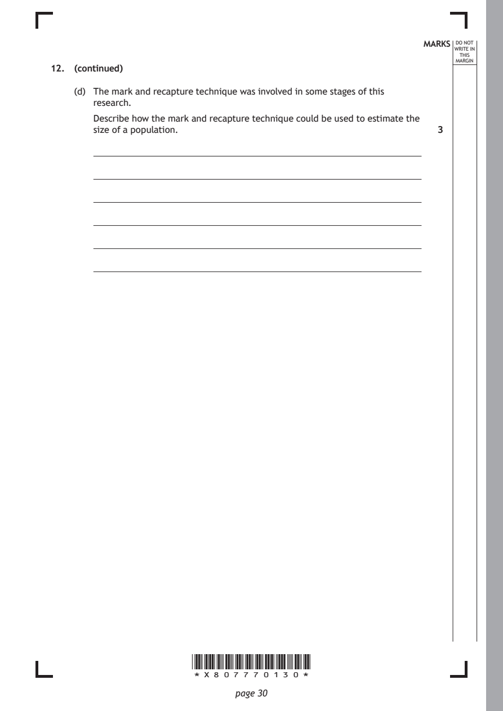
Selectable page text
MARKS _{W}^{D}_{R}^{O}_{I} _{T}^{N}OT
E IN
THIS
MARGIN
12. (continued)
(d) The mark and recapture technique was involved in some stages of this
research.
Describe how the mark and recapture technique could be used to estimate the
size of a population. 3
*X807770130*
page 30PDF page 31
Paper 2, Question 13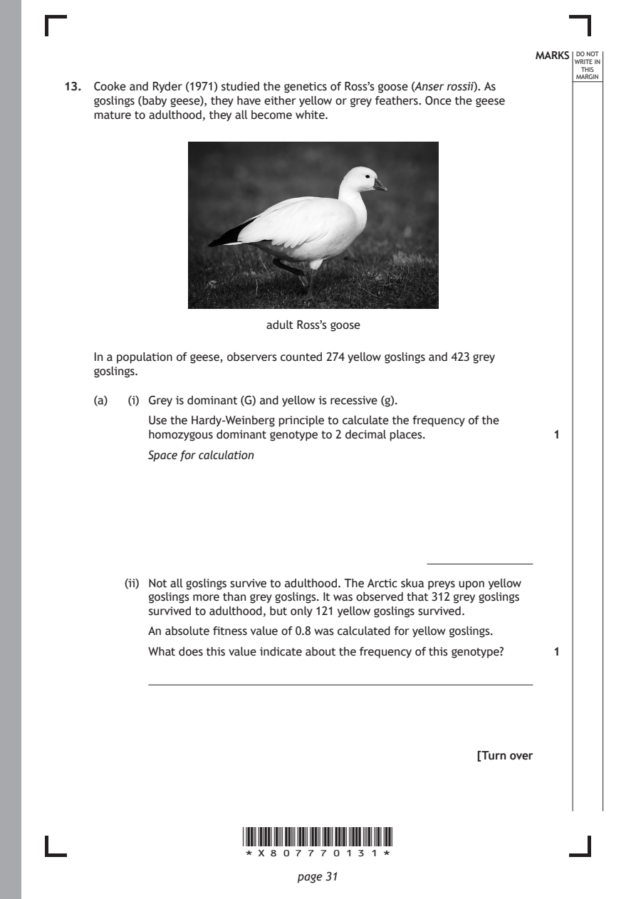
Selectable page text
MARKS _{W}^{D}_{R}^{O}_{I} _{T}^{N}OT
E IN
THIS
MARGIN
13. Cooke and Ryder (1971) studied the genetics of Ross’s goose (Anser rossii). As
goslings (baby geese), they have either yellow or grey feathers. Once the geese
mature to adulthood, they all become white.
adult Ross’s goose
In a population of geese, observers counted 274 yellow goslings and 423 grey
goslings.
(a) (i) Grey is dominant (G) and yellow is recessive (g).
Use the Hardy‑Weinberg principle to calculate the frequency of the
homozygous dominant genotype to 2 decimal places. 1
Space for calculation
(ii) Not all goslings survive to adulthood. The Arctic skua preys upon yellow
goslings more than grey goslings. It was observed that 312 grey goslings
survived to adulthood, but only 121 yellow goslings survived.
An absolute fitness value of 0.8 was calculated for yellow goslings.
What does this value indicate about the frequency of this genotype? 1
[Turn over
*X807770131*
page 31PDF page 32
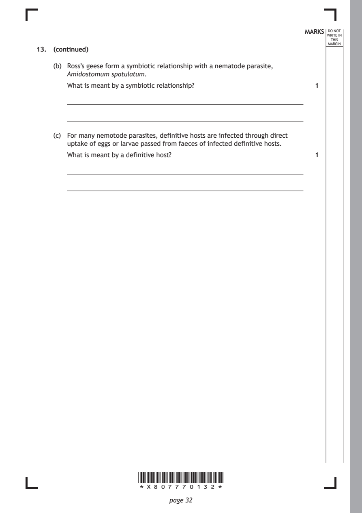
Selectable page text
MARKS _{W}^{D}_{R}^{O}_{I} _{T}^{N}OT
E IN
THIS
MARGIN
13. (continued)
(b) Ross’s geese form a symbiotic relationship with a nematode parasite,
Amidostomum spatulatum.
What is meant by a symbiotic relationship? 1
(c) For many nemotode parasites, definitive hosts are infected through direct
uptake of eggs or larvae passed from faeces of infected definitive hosts.
What is meant by a definitive host? 1
*X807770132*
page 32PDF page 33
Paper 2, Question 14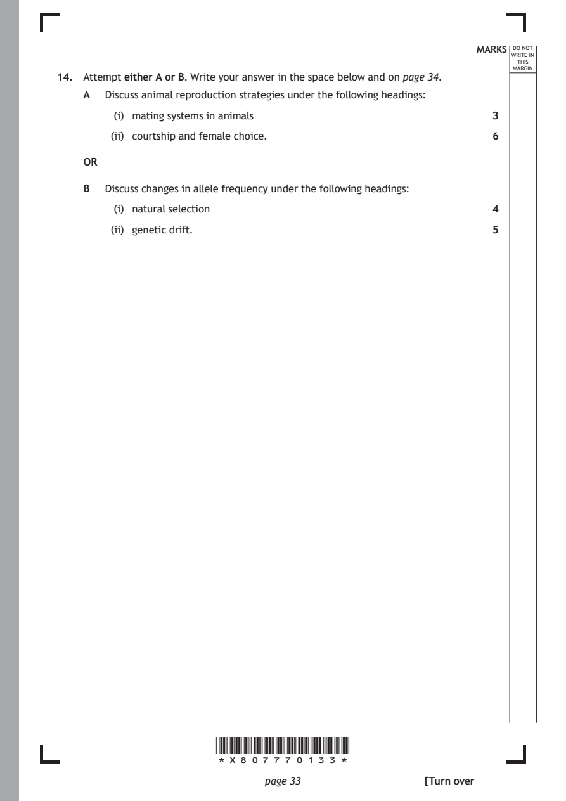
Selectable page text
MARKS _{W}^{D}_{R}^{O}_{I} _{T}^{N}OT
E IN
THIS
MARGIN
14. Attempt either A or B. Write your answer in the space below and on page 34.
A Discuss animal reproduction strategies under the following headings:
(i) mating systems in animals 3
(ii) courtship and female choice. 6
OR
B Discuss changes in allele frequency under the following headings:
(i) natural selection 4
(ii) genetic drift. 5
*X807770133*
page 33 [Turn overPDF page 34
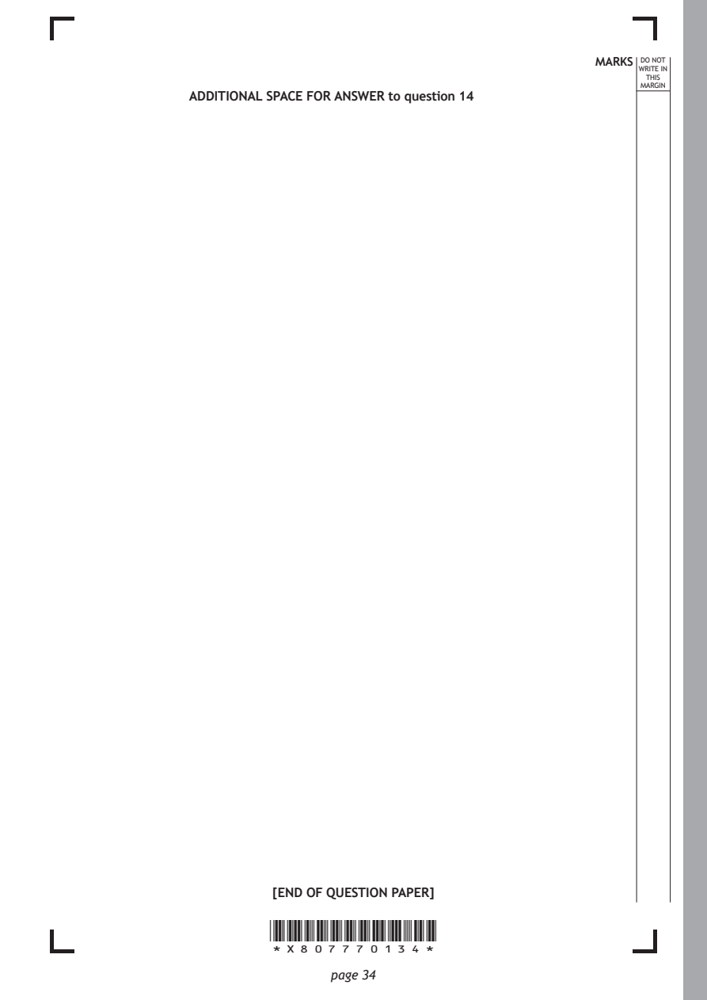
Selectable page text
MARKS _{W}^{D}_{R}^{O}_{I} _{T}^{N}OT
E IN
THIS
MARGIN
ADDITIONAL SPACE FOR ANSWER to question 14
[END OF QUESTION PAPER]
*X807770134*
page 34PDF page 35

Selectable page text
MARKS _{W}^{D}_{R}^{O}_{I} _{T}^{N}OT
E IN
THIS
MARGIN
ADDITIONAL SPACE FOR ANSWERS AND ROUGH WORK
*X807770135*
page 35PDF page 36
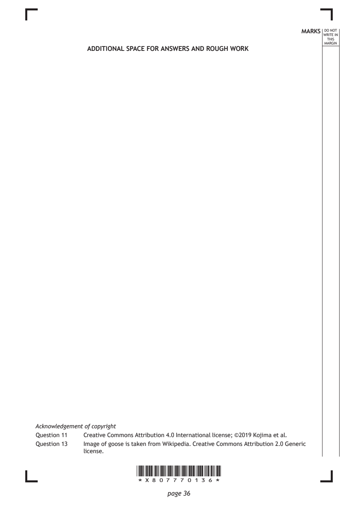
Selectable page text
MARKS _{W}^{D}_{R}^{O}_{I} _{T}^{N}OT
E IN
THIS
MARGIN
ADDITIONAL SPACE FOR ANSWERS AND ROUGH WORK
Acknowledgement of copyright
Question 11 C reative Commons Attribution 4.0 International license; ©2019 Kojima et al.
Question 13 I mage of goose is taken from Wikipedia. Creative Commons Attribution 2.0 Generic
license.
*X807770136*
page 36